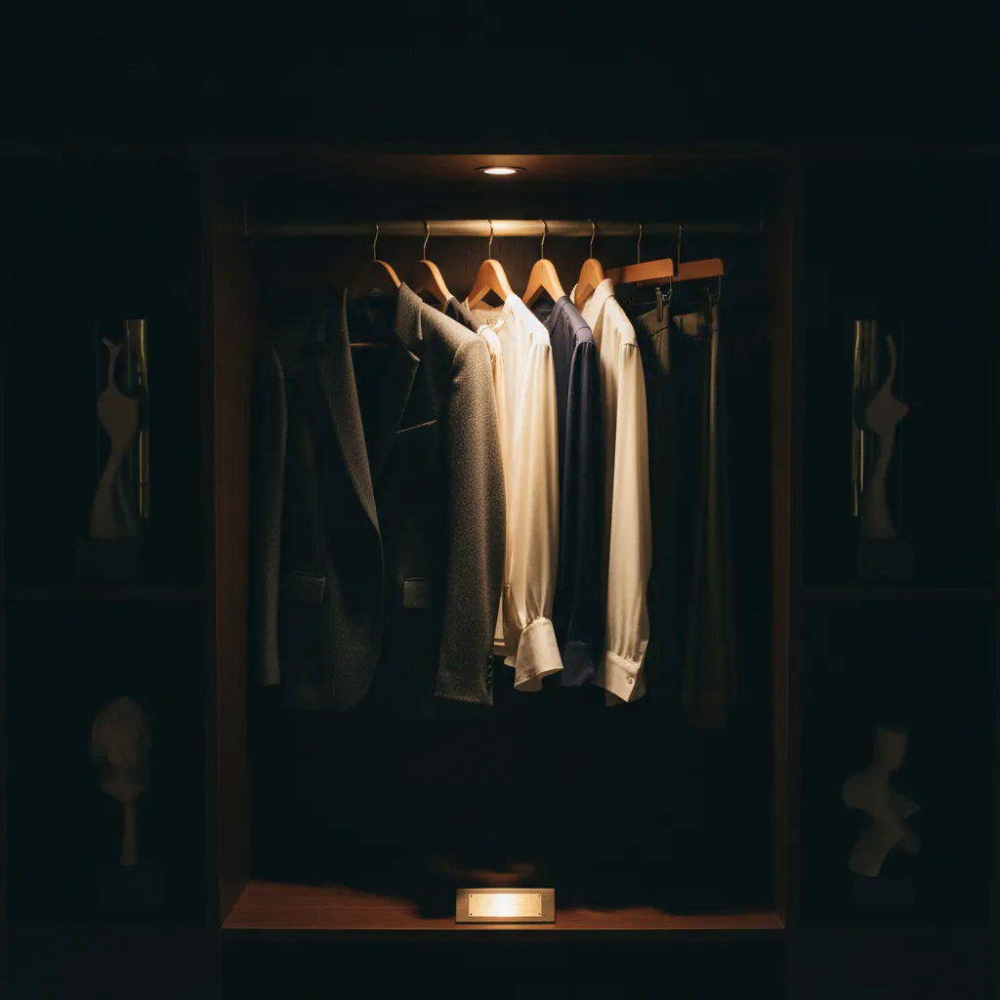
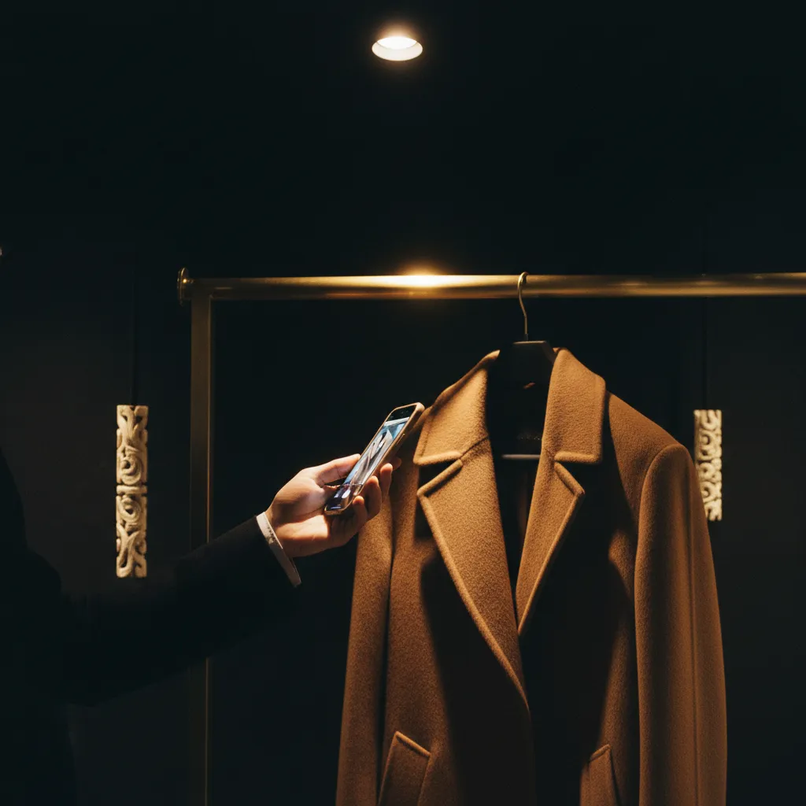
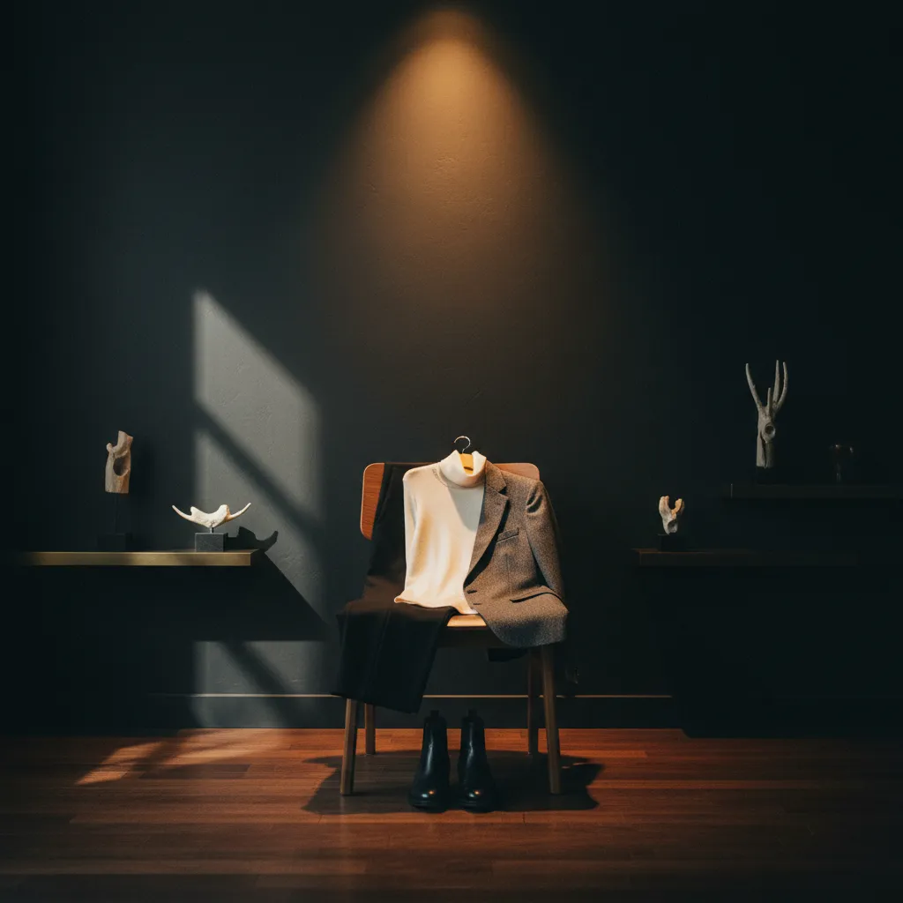

Every ZAUQ image is cinematic editorial, atelier aesthetic: near-black charcoal ground #0B0A09, warm brass and gold #D8B26A, bone and cream accents, a single warm directional spotlight, deep shadows, film grain, medium-format look, shallow depth of field — with deliberate negative space for a headline and no text or logo baked in.
NEVER: cool or blue light, high-key studio white, flat even lighting, stock-photo smiles, saturated colour, two light sources, or a face where the garment is the subject.
Garments are matted cut-outs on a lit niche (7% padding, 9% on small tiles); scenes are photographs in a 3px rectangle.